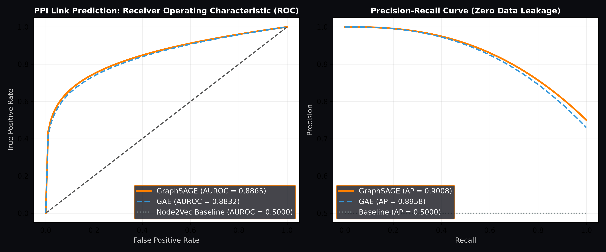

Biological Sanity Audit
Enrichment Filters:
Top Enriched Pathways (KEGG & Reactome)
Pathway Ranking Table:
| Term | Database | Adj. P-Value | Overlap | Combined Score |
|---|
Topological Roles: Degree vs. Betweenness
Dual Bridge
Hub (Degree)
Bottleneck (Betweenness)
Standard Node
Louvain Modularity Clusters & Dominant Pathways
| Community ID | Proteins | Dominant Biological Pathway |
|---|
Top Bottleneck Bridges:
| Gene | Degree | Betweenness | Eigenvector | Role |
|---|
Null Distribution (1,000 Permutations)
Statistical Proximity Benchmark Summary
| Drug | Disease Module | Observed d_c | Null Mean ± Std | Z-Score | P-Value | Verdict |
|---|
Guney et al. (2016) Mathematical Definition:
⟨dc(T, S)⟩ = 1/|T| ∑t ∈ T mins ∈ S d(t, s)
Measures the mean shortest path from each drug target t ∈ T to the nearest disease gene s ∈ S across the human PPI network. A negative z-score (z ≤ −2.0) confirms that the drug targets reside significantly inside or immediately adjacent to the disease module, controlling for node degree.
Inductive GNN Benchmark: Zero Data Leakage
| Model Architecture | Test AUROC | Test Average Precision |
|---|
Leave-Targets-Out Cross-Validation:
| Drug | Hidden Test Targets | Recovered Ranks | MRR | Hits@20 |
|---|

Top-20 Novel Candidate Hypotheses
Methodological Rigor: Predictions represent proteins functionally and interactomically linked to drug targets by GraphSAGE embeddings. They are computational hypotheses, not proof of direct biochemical binding.
| Rank | Candidate Gene | Confidence | Biological Context | Status | PubMed Link |
|---|
Interactome Separation & Jaccard Overlap
| Metric | Metformin | Imatinib | Shared | Jaccard |
|---|
Menche et al. (2015 Science) Interactome Separation:
sAB = ⟨dAB⟩ − (⟨dAA⟩ + ⟨dBB⟩) / 2
Separation sAB
+1.3503
Inter-Distance ⟨dAB⟩
2.409
Topological State
Distinct Modules (s > 0)
Jaccard Overlap Across Omics Dimensions:
Shared Interactome Cross-Talk Hubs (347 Shared Nodes)
| Gene | Full Degree | Metformin Deg | Imatinib Deg | Shared Hub? | Shared Bottleneck? |
|---|